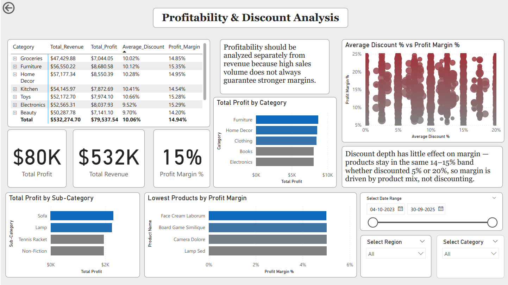
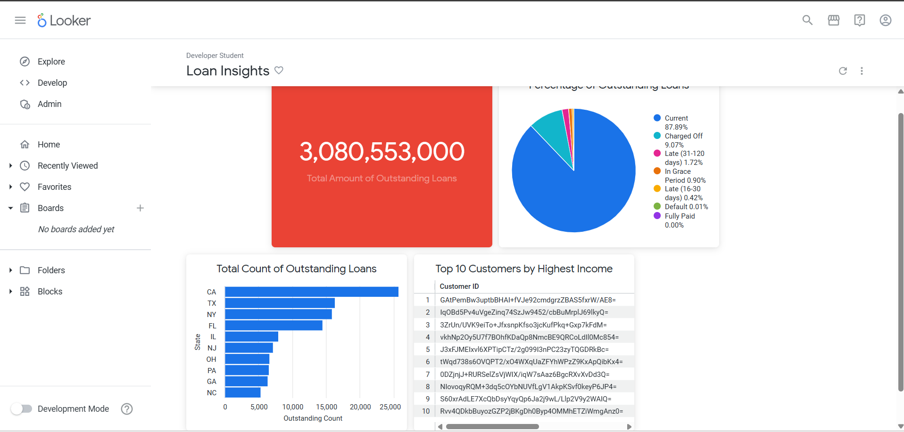

Sales Performance Overview
Sales dashboard tracking revenue, profit, orders, average order value, product performance, category trends, and regional sales performance.
Examples of dashboards and reporting projects I have built using sales, business, healthcare, and financial datasets.
Sales dashboard tracking revenue, profit, orders, average order value, product performance, category trends, and regional sales performance.

Profitability dashboard analyzing revenue, profit margin, product categories, discount behavior, and low-margin products to support better pricing decisions.

Power BI dashboard monitoring patient volume, appointments, revenue, cancellation rate, department performance, and treatment cost trends.

Looker dashboard summarizing outstanding loan amounts, loan status distribution, state-level loan counts, and high-income customer segments.
Clean messy Excel or CSV sales files by fixing duplicates, missing values, inconsistent formats, incorrect columns, and messy transaction records.
Build interactive dashboards to track revenue, orders, profit, top products, customer trends, monthly performance, and sales KPIs.
Create Excel reports using pivot tables, formulas, lookup functions, charts, and summary tables for easier business tracking.
Summarize key findings from your data, including best-selling products, slow-moving items, revenue trends, customer patterns, and improvement opportunities.
I work with online sellers and small businesses that have sales data stored in Excel, CSV exports, or platform reports and want a clearer way to understand performance.
Analyze product sales, revenue trends, order patterns, and customer behavior from store exports.
Clean marketplace sales reports and create dashboards to monitor orders, sales performance, product trends, and revenue changes.
Turn manual spreadsheet tracking into cleaner reports and dashboards that are easier to update and understand.
Help sellers identify sales trends, top-performing products, underperforming categories, and opportunities for better decisions.
You provide your Excel, CSV, or sales export file along with what you want to understand from the data.
I clean and prepare the data by fixing formatting issues, duplicates, missing values, and inconsistent fields.
I build a Power BI dashboard or Excel report with clear KPIs, charts, filters, and business-friendly visuals.
You receive a short summary explaining the main findings, trends, and possible next steps from your data.